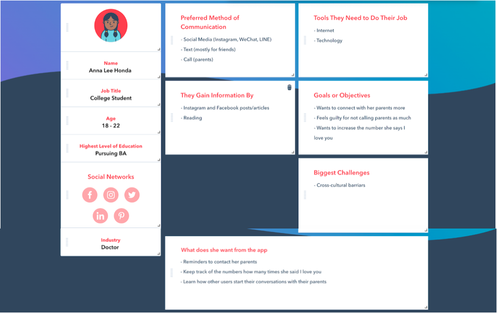
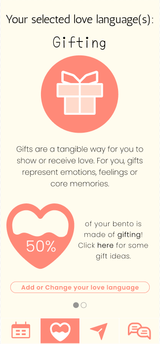
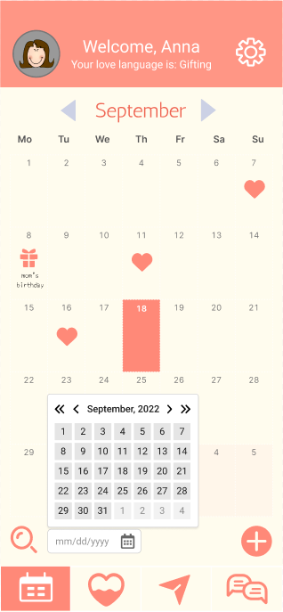
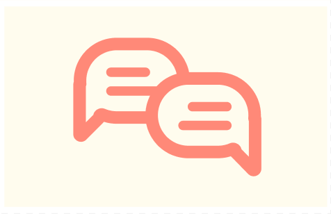

Love Bento
We're here to help you bring love back into your life again.
We're here to help you bring love back into your life again.
LoveBento is an app that encourages users to send love to their loved ones. By adding "hearts” to the calendar, users can get notifications by the app to remind themselves to send love with their preferred love languages.
LoveBento was designed, developed and prototyped by Michiru Ishikawa '24, CJ Jin '24 and Cheryl Wang '23 for Catherine Delcourt's CS220 Human-Computer Interaction at Wellesley College.
The initial sketch was digitally drawn on Procreate and recreated using Google Slides and InVision. Later, Figma was used to develop the final prototype.
Your love language is how you express love to your loved ones. Love Bento has five love languages in total (Acts of Service, Gifting, Physical Touch, Quality Time, and Affirmation) and allows users to select up to three preferred languages that resonate with them the most. Users select their love languages when they first set up their accounts. However, users can easily change them on the love language and analytics page by clicking the “Add or Change your love language” button.
You can see each definition below:
Being a thoughtful friend or partner is your way of showing the people around you that you care. No matter how big or small, you’re always happy to help.
Gifts are a tangible way for you to show or receive love. For you, gifts represent emotions, feelings or core memories.
Touch is a way for you to communicate your emotions nonverbally. You prefer close proximity and physical affection to let others know how you cherish them.
Spending your time with someone gives you a sense of “togetherness”. To you, nothing means more than when your partner/friend and you are focused only on each other in this impossibly large universe.
You enjoy directly communicating your thanks and affection. You love supporting and uplifting people to make them feel loved.
In Pset 1, we interviewed several students around us and asked them how often they contacted their parents/guardians, how far away they were from their parents/guardians, how often they said “I love you” to their parents/guardians, and finally if getting reminders would cause them to be more likely to contact their parents. Most of our participants were Asian-American, which caused some interesting takeaways that we think can help us narrow our app to something more centered on first/second-generation immigrant children.
We identified mainly two problems from our interviewees:
1) There’s the need to express gratitude and love to their loved ones across cultural barriers and in different cultural expressions.
2) The need to be reminded to express gratitude and love to their loved ones and to be given the chance to connect and bond with their loved ones on a deeper level.
We also realized that our initial plan was too broad because we were trying to be widely applicable while a lot of the Asian-American participants we interviewed wanted something a little more niche. Therefore, we concluded that we wanted to center on Asian-American students’ experiences and needs a little more, although, of course, it would be applicable to everyone else as well.
Based on our interviews from P1, we formalized a persona that helps guide our design process. Our persona, Anna Grace Lee-Honda, is a Japanese Chinese high school student who wants to connect with their loved ones and show gratitude more often. She wants an app that gives her reminders to contact her parents and keep track of the numbers of how many times she said “I love you” to her parents. However, Anna’s native language is English and she speaks Japanese and Chinese poorly. Her parents are immigrants so sometimes she finds it hard to connect with them or their culture. Thus, she wants to learn how other users, who are facing language barriers as well, start their conversations with parents.
Through our task analysis, we focused on three main tasks:
1) Get reminders to contact parents (loved ones) and connect with them
2) Keep track of progress
3) Learn conversation topics
Based on our persona and task analysis, we created 2 design sketches.
Pros and cons for Design 1:
Pros: We liked how accessible this design was. We created a footer navigation bar at the bottom, so the user is always able to locate the three core parts of our app that we think they’ll always be using (the calendar, the chat function, and the topics/forum page). Although we changed the core parts in the final prototype, the navigation bar still remained to be the app’s core navigation tool. In this design, we thought having today’s events all on the home page can be a good way for the user to receive information and look at what needs to be done.
Cons: The footer appeared to be clunky and cluttered. This also minimized the amount of space that a user has to view the contents of a page, which isn’t something we want because a phone is already so small and has limited space. Potentially, the way that the user is receiving information is too cluttered and prevents them from viewing it in a way that could help them receive information.
Pros and cons for Design 2:
Pros: We like how sleek this design looks. It’s cleaner than the other design, and we give the user a lot of space simply by allowing the menu to be accessed/hidden with the click of a button. We liked the idea of putting the calendar on the home page. The most important information that our app offers is how many times they expressed love to their loved ones, so having it on the homepage/having it on its own page is definitely a question we want to explore further. With its consistency and simplicity, design 2 became our base design for our final prototype.
Cons: The scrolling design may prevent the user from accessing all the information they want in a page. We want users to be immediately able to access important information without boring them with too many clicks (aka better efficiency). However, with our current design, it would require a lot of scrolling to do everything we want.

After receiving feedback from our initial presentation, we decided to focus on the core aspects of our app instead of attempting to subject our user to too much information. We believe that much of what makes our app unique is our calendar, which helps the user keep track of how often they have shown gratitude to their parents. Therefore, we moved our calendar to our home page, much like our second design. However, we decided to keep the core elements of the first design as many people said that the second design had too many tabs and could be overwhelming. We decided to simplify a lot of what we had for both designs in order to provide the user with a more simple and straightforward approach. We also decided to take out the parent aspect of the app (such as having parents download the app) to focus more on our target audience, the college-aged students.
A “risky” interaction is the calendar, as the app orients around its usability. We are also worried about the part involving choosing the user’s love language, as that requires a lot of components and our app wants to adapt based on the current love language.
Hi [name], thanks for joining. I am [XXX]; I am enrolled this semester in a Human-Computer Interaction course. Our goal today is to test the usability of a new app that I am designing together with my team as part of our course project.
I have some team members here with me [introduce them]. They’ll just be quietly observing the session, looking for ways we can improve the app.
I am going to share with you in the chat a link to the wireframe prototype of our app. This is an early prototype of the app that helps you to show gratitude to your parents more often in your preferred love language. Our target audience is college students who are living away from their parents and looking for more communication opportunities.
Once you open the prototype, please share your screen.
Introductory Questions:
1) How often do you contact your parents? If you are able to visit your parents, how often do you do so?
2) How often do you express gratitude to loved ones?
3) Are you familiar with using calendar based apps?
4) How old are you?
Scenario:
1) You go on the app to send your love to your family.
2) You realize it’s your mother’s birthday in a week.
3) You go to the forums to ask for birthday gift recommendations.
Tasks:
1) Send love to your family.
2) Check the calendar.
3) Post a question in the forum.
Post task questionnaire:
1) Did you find yourself lost while conducting the tasks?
2) How efficient was the interface in completing your tasks?
3) What did you like about this app?
4) What did you dislike about this app?
Users generally liked the calendar aspect and the forum function of our app. It helped users fulfill their needs. Users generally did not like the index function, it created pressure on users. Two of the users could find the forum because the signifier was unclear, they both thought the icon leading to the forum led to a feedback function. Users are lost at first on how to use the calendar or the functions of the app. We learned that we need to provide more instructions when the user first uses the app. We also figured that the definition of different love languages was unclear to users, they were confused about what each love language consists of and generally why they need to choose a love language.
We decided to tone the analytics page down by a lot to make it less intimidating since that was the main feedback we received from our interviewees. We decided to change the logo of the forum post since a lot of people said that they were confused by it. Additionally, we were determined to improve the calendar and make it easier to view. We thought we could also potentially add a search icon. More importantly, we learned that we need to add a tutorial to help users get first acquainted with the app and introduce the idea of love languages.
We learned that we were blindsided by some of the feedback because we hadn’t received it in class when we first showed off the prototype. People who viewed the app as one they would potentially use had different opinions than people who viewed it as an app in general. Furthermore, we decided that we should test more thoroughly all of our main pages and make sure users will not be confused about the core functionalities of our apps.
People like our idea. Yay! However, we have a lot to improve on. People want a tutorial for new users to help them get used to the webpage and help ensure they know what love languages are, and think what also would be helpful for reorienting users is making a Q&A page where users can see through common questions and gain more documentation. We plan on adding more feedback and error messages to help prevent people from misclicking/doing weird things they don’t intend to do. Also, people show love in different ways, so we should allow users to choose a maximum of three love languages.
Some people think we should focus more on love languages compared to analytics because the latter might be too much pressure and cause them to quit the app. We plan on replacing the analytics section with the love languages.
As for the calendar, perhaps we should make it more clear what adding an event does and differentiate events with a key (such as dates/holidays/reminders). We should also make it easier to add upcoming dates/events.
In the chat, we’ll make it more clear that the chat is linked to iMessages and not hosted on our webpage. We also will show a red dot for unread chat notifications sent throughout the chat.
In the forum, we’ll make it more clear how to make/delete posts since some people were confused. We’ll also add a search bar in case a user is specifically looking for conversations about a certain event or topic.
In P6, we had our final evaluation of our interactive prototype usability. All six participants completed the 3 tasks in a very short time. Overall, the users were satisfied with the efficiency, especially with the simplicity of selection bars/buttons on every page and the detailed documentation/explanation for the love languages. However, there were a few suggestions for each task so we would like to reflect them in our final prototype.
For task 1, the users were able to find the “Add” button in the right bottom corner of the home page and select the recipient, choose love language, and add notifications to the calendar. However, some of them suggested that it would be more intuitive if the users can add hearts by tapping on the dates as well. We learned that it would be more intuitive if we allow users to use both methods (add button and tapping individual dates) to add hearts to the calendar. We also learned that we should change the color pallet for the hearts in the calendar because some colors may discourage people from sending love (for example, black hearts do not match the app vibe => consider having all hearts in the same color). Therefore, we will give more attention to the selection of colors and fonts.
For task 2, the users were able to search for a specific date very quickly. They liked how both the arrows and the selection bar allowed them to navigate through the calendar. One minor suggestion was that it might be helpful if there was a zoom in/out function. One participant also mentioned that it would be helpful if the calendar can let the user know which day today is by highlighting the day.
For task 3, almost all participants suggested changing the icon of the communication and forum. Although the operations to post their posts on the forum were very easy, they struggled to find the forum first. We learned that we should have a headline of “forum” on the forum page and have a more intuitive design for the icon.
